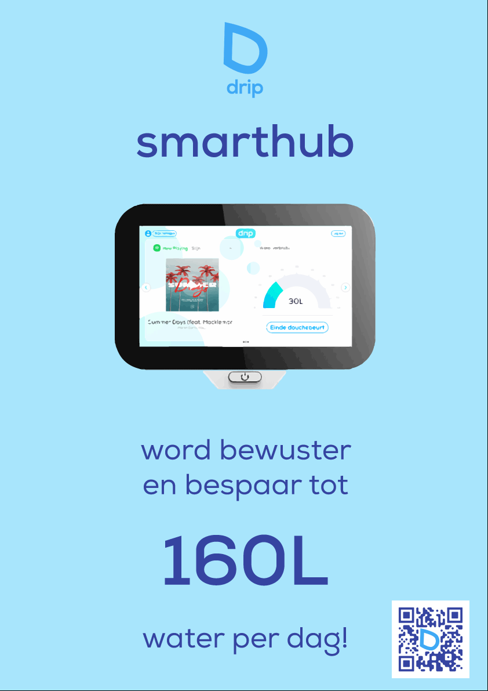
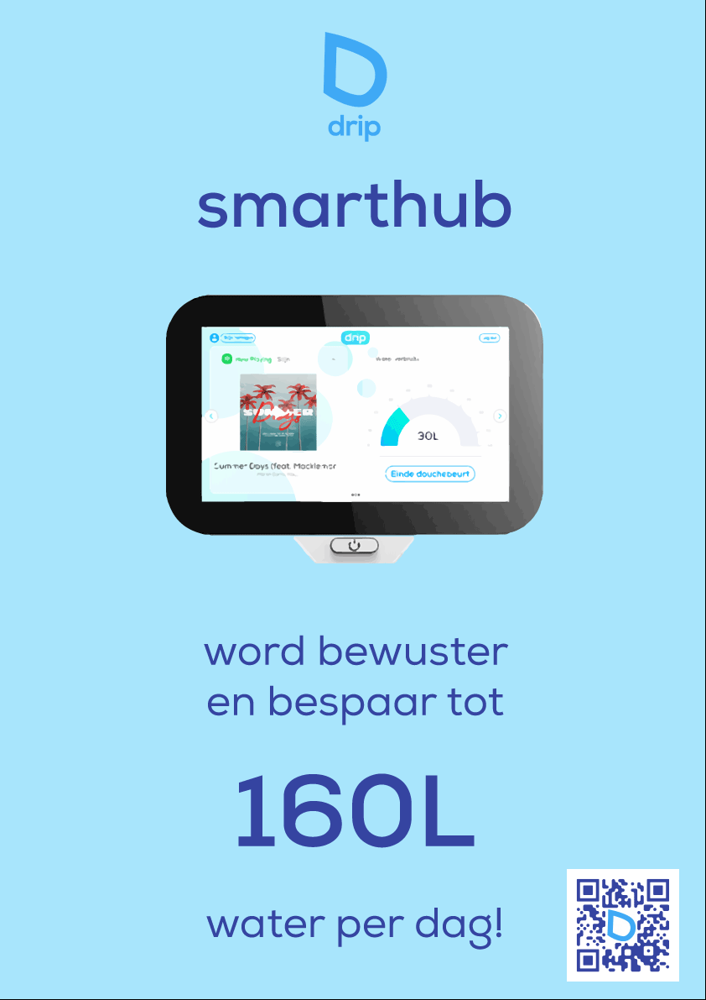

Ik heb ideële posters gemaakt met Adobe Illustrator voor mensen die nog niet op de hoogte zijn van het onnodig hoge waterverbruik in Nederland. Zo probeer ik mensen bewuster te maken van hun eigen waterverbruik, waardoor ze misschien ook interesse gaan tonen in ons product. Met het eerste billboard probeer ik mensen te prikkelen door ze schuldig te laten voelen. Met het water dat je verbruikt door 5 minuten per jaar te lang te douchen (zie Research) terwijl je al lang schoon bent, kunnen 28 mensen van schoon drinkwater worden voorzien. Hiermee probeer bij mensen een beeld op te wekken van 28 mensen die dringend drinkwater nodig hebben om te kunnen overleven, terwijl je lekker onder de douche water verspilt. Dan sta je voortaan wel minder ontspannen onder de douche en denk je misschien toch om eerder uit de douche te gaan. In de tweede poster staat onze slogan met een douche, waar toevallig ons uit-waterdruppel-geïnspireerde logo uit druppelt.
Ik heb commerciele posters gemaakt met Adobe Illustrator voor mensen die al op de hoogte zijn van het hoge waterverbruik in Nederland en die er iets aan willen doen. Deze posters moeten deze mensen aansporen om ons product aan te schaffen. Dat is niet makkelijk, aangezien minder lang douchen geen geld hoeft te kosten. Daarom wil ik met deze posters juist aangeven wat ons product zo uniek maakt: overzichtelijkheid en onze gamification. Er is concurrentie op het gebied van slimme watermeters, maar deze geven geen overzichtelijkheid. Verder is onze echte selling-point onze gamification. Je kan Drip Coins verdienen door minder lang te douchen, maar je kan ook de strijd aangaan met je gezin of vrienden om extra Drip Coins te verdienen. Denk aan ‘Hou het langste vol om maximaal 5 minuten per dag te douchen’ en de winnaar verdient 50 dripcoins. Er zijn ook persoonlijke challenges en je hebt een meer die langzaam leegloopt op de smarthub, terwijl jouw diertjes ervan moeten kunnen drinken. Douche je te lang, dan vluchten de diertjes van jouw landschap. Deze dieren brengen ook extra Drip Coins op (zie Appdesign). Deze posters zijn simpel en duidelijk, ze brengen duidelijk de boodschap over zonder onnodige informatie. Onder deze paragraaf kan je meer commerciële posters vinden.
 

Ik heb dit semester omtrend posterdesign veel geleerd: de balans tussen te druk en te minimalistisch vinden, een boodschap goed overbrengen, hoe je met een poster het gedrag van mensen kunt beïnvloeden en hoe je bovenal iemand’s aandacht trekt. Ik had nog nooit met Illustrator gewerkt, maar het werd van alle kanten aangeraden, dus ik gaf het een kans. Het was wel even wennen, maar ik heb het voor elkaar gekregen. Ik denk dat ik met mijn commerciele posters goed onze selling-points laat zien en dat ik met mijn ideeele posters goed mijn boodschap overbreng: mensen douchen onnodig lang en hier moet snel verandering in komen. De volgende keer zou ik wel meer het actuele nieuws erbij willen betrekken, aangezien tegenwoordig de toenemende droogte en onnodig hoog waterverbruik vaak in het nieuws te vinden is. Ook wil ik de volgende keer minder afbeeldingen van internet jatten en meer zelf maken, daarvoor zal ik wel meer tijd in Illustrator moeten steken.